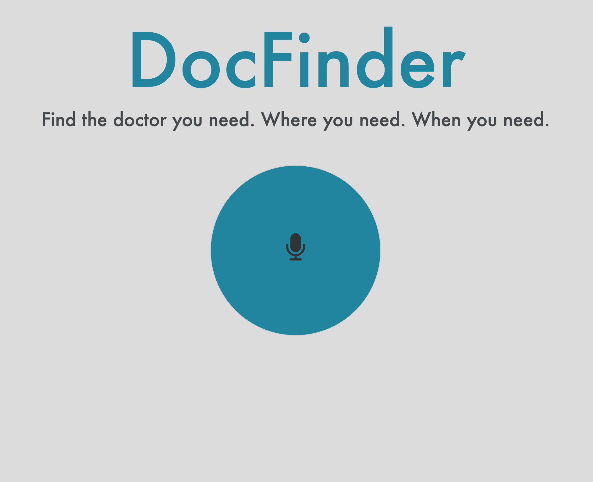
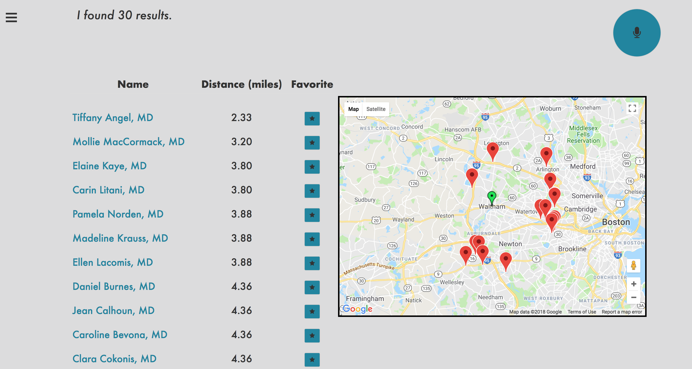
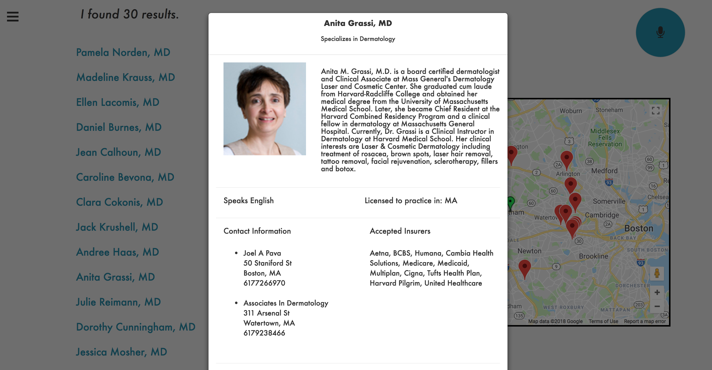
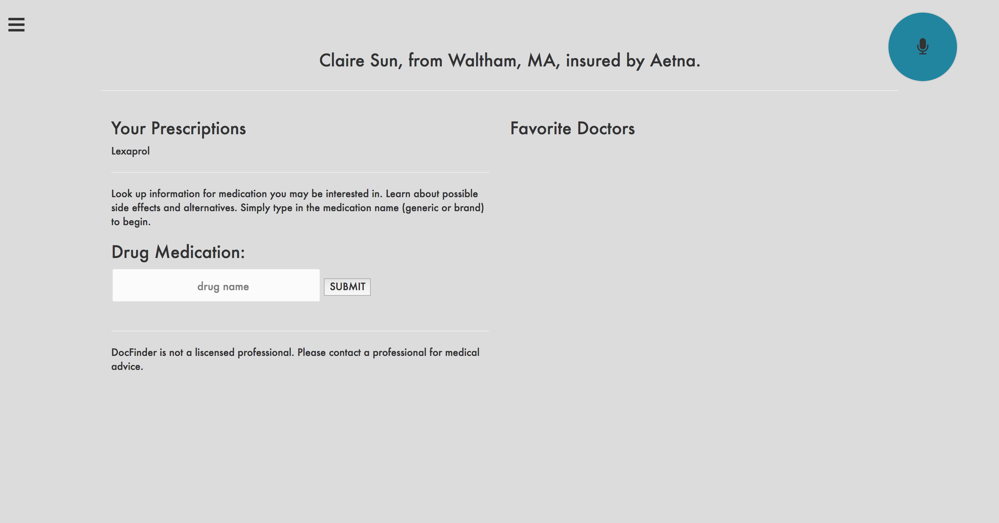

DocFinder
DocFinder is an application that helps users to find a doctor in their area who takes their insurance through voice queries. We developed this app because we found that it was difficult to find a new doctor by simply Googling. Users can click the microphone button, and ask for a doctor based off of their specialty, location, insurance, and spoken languages. An example query would be like "Find me a dermatologist who takes Aetna near 215 South St. Waltham, MA". The app sends this utterance to the DialogFlow API, which parses the string for particular parameters. In this case, for the kind of doctor, the address, and the insurance company. The API returns a JSON object with these parameter values. These values are then sent to the BetterDoctor API, a doctor database. This API then returns a JSON object of doctors that fit the specified criteria. These doctors are presented to the user as a table of doctors they can chose from ordered by proximity.
Each doctor links to a modal with a doctor profile that shows a biography, addresses of their practices, and the insurances that they take. Some profiles also included a pie chart of payments recieved from pharmaceutical companies by using the Open Payments Data API. Each doctor also has a corresponding location marker on Google Maps to show the locations of the doctors in regards to the user's location.
Users can also make profiles that tracked favorited doctors and their medication prescriptions. Users can readily search for drug information in the included drug information search engine utilising the Iodine API.
Take a look at the Github Repository!
Awards
Best Speech Application - AVIOS Speech Application Competition 2018
Media
Student Feature Case Study: Provider Data powers Doctor search with speech recognitionAVIOS Speech Application Competition